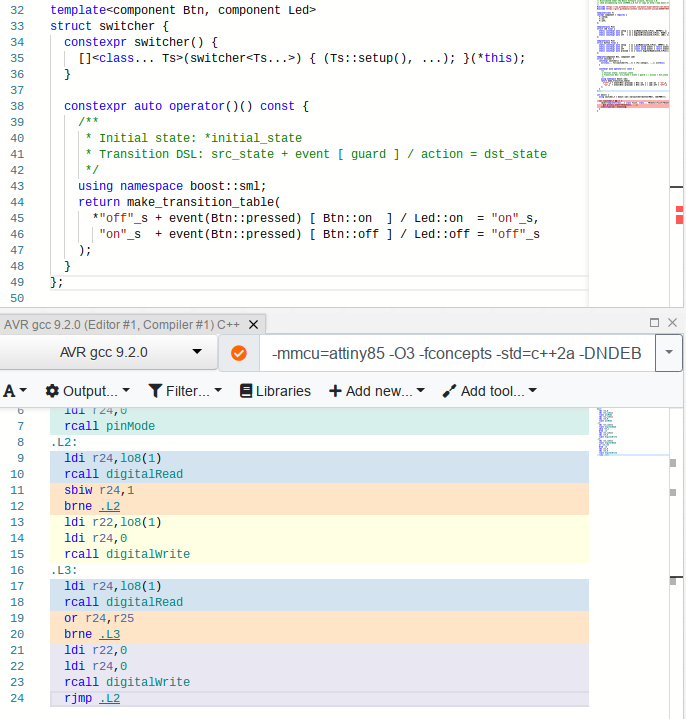

<!doctype html>
<html>
  <head>
    <meta charset="utf-8">
    <meta name="viewport" content="width=device-width, initial-scale=1.0, maximum-scale=1.0, user-scalable=no">

    <title>Online AVR/Arduino Development with C++20</title>

    <link rel="stylesheet" href="reveal.js/css/reveal.css">
    <link rel="stylesheet" href="reveal.js/css/theme/league.css" id="theme">
    <link rel="stylesheet" href="extensions/plugin/line-numbers/line-numbers.css">
    <link rel="stylesheet" href="extensions/css/highlight-styles/zenburn.css">
    <link rel="stylesheet" href="extensions/css/custom.css">

    <script>
      var link = document.createElement( 'link' );
      link.rel = 'stylesheet';
      link.type = 'text/css';
      link.href = window.location.search.match( /print-pdf/gi ) ? 'reveal.js/css/print/pdf.css' : 'reveal.js/css/print/paper.css';
      document.getElementsByTagName( 'head' )[0].appendChild( link );

      function set_address(self, remote, local) {
        if (window.location.search.match("local")) {
          self.href = local;
        } else {
          self.href = remote;
        }
      }
    </script>

    <meta name="description" content="Online AVR/Arduino Development with C++20">
    <meta name="author" content="Kris Jusiak">
    <meta name="apple-mobile-web-app-capable" content="yes">
    <meta name="apple-mobile-web-app-status-bar-style" content="black-translucent">
  </head>

  <body>
    <div class="reveal">
      <div class="slides">
          <section data-markdown=""
                   data-separator="^====+$"
                   data-separator-vertical="^----+$">
          <script type="text/template">
###### Meeting-Embedded 2020 / https://boost-ext.github.io/sml/meeting-embedded-2020

---

## Online AVR/Arduino Development with C++20

---

###### [kris@jusiak.net](mailto:kris@jusiak.net) | [@krisjusiak](https://twitter.com/krisjusiak) | [linkedin.com/in/kris-jusiak](https://www.linkedin.com/in/kris-jusiak)

==============================================================================

### Agenda

* #### Motivation/Goal
<!-- .element: class="fragment" data-fragment-index="1" -->
* #### Tools/Libraries
  <!-- .element: class="fragment" data-fragment-index="2" -->
* #### Project - Switcher
  <!-- .element: class="fragment" data-fragment-index="3" -->
  * #### Design/Implementation/Testing/Simulation
  <!-- .element: class="fragment" data-fragment-index="4" -->
* #### Demo
  <!-- .element: class="fragment" data-fragment-index="5" -->
* #### Summary
<!-- .element: class="fragment" data-fragment-index="6" -->

---

##### <p align="left" style="background-color:darkblue">&nbsp;&nbsp;&nbsp;&nbsp;`darkblue background - something to remember ✓`</p>
<!-- .element: class="fragment" data-fragment-index="7" -->

==============================================================================

### Motivation

<a href="https://store.arduino.cc/usa/arduino-uno-rev3"></a>
<a href="https://www.microchip.com/wwwproducts/en/ATtiny85"></a>

----

### Motivation/Problem

  * #### [Arduino IDE](https://www.arduino.cc) - avr-gcc-7.3.0 / C++11
  <!-- .element: class="fragment" data-fragment-index="1" -->

  * #### Simulation online?
  <!-- .element: class="fragment" data-fragment-index="2" -->

  * #### Modern C++?
  <!-- .element: class="fragment" data-fragment-index="3" -->

```cpp
bool is_button_1_on = false;
...

void loop() {
  if ((is_button_1_on and not is_button_2_on) or is_led_off) {
    ...
  } else if (extra_feature_enabled and not testing) {
    ...
  } else {
    ...
  }
}
```
  <!-- .element: class="fragment" data-fragment-index="3" -->

----

### Goal

* #### Implement a simple project
<!-- .element: class="fragment" -->

  * #### Online (Design/Implementation/Testing/Simulation)
  <!-- .element: class="fragment" -->

  * ##### C++20
  <!-- .element: class="fragment" -->

  * #### Multiple architectures (Arduino Uno / Attiny85)
  <!-- .element: class="fragment" -->

==============================================================================

### Tools/Libraries

* #### Design - [Plant UML](https://plantuml.com)
<!-- .element: class="fragment" -->

* #### Implementation - [Compiler Explorer](https://godbolt.org)
  <!-- .element: class="fragment" -->

  * #### avr-gcc-9.2.0 / C++20
  <!-- .element: class="fragment" -->

  * #### gcc-trunk/clang-trunk
  <!-- .element: class="fragment" -->

  * #### Libraries
  <!-- .element: class="fragment" -->

  * #### `#include <http://...>`
  <!-- .element: class="fragment" -->

  * #### Cross-compilation
  <!-- .element: class="fragment" -->

----

* #### Testing - [UT](https://github.com/boost-ext/ut)

  * #### C++20 ([GCC-9+, Clang-9.0+, Apple Clang-11.0.0+](https://travis-ci.org/boost-ext/ut), [MSVC-2019+](https://ci.appveyor.com/project/boost-ext/ut))
  <!-- .element: class="fragment" data-fragment-index="1" -->

  * #### Single [header/module](https://github.com/boost-ext/ut/blob/master/include/boost/ut.hpp) / 2k LOC
  <!-- .element: class="fragment" data-fragment-index="2" -->

  * #### Only STL is required
  <!-- .element: class="fragment" data-fragment-index="3" -->

  * #### Macro-free
  <!-- .element: class="fragment" data-fragment-index="4" -->

----

* #### Implementation / State Machine - [SML](https://github.com/boost-ext/sml)

  * #### C++14 ([Clang-3.4+](https://travis-ci.org/boost-ext/sml), [XCode-6.1+](https://travis-ci.org/boost-ext/sml), [GCC-5.2+](https://travis-ci.org/boost-ext/sml), [MSVC-2015+](https://ci.appveyor.com/project/boost-ext/sml))
  <!-- .element: class="fragment" -->

  * #### [UML-2.5](https://www.omg.org/spec/UML/2.5) compliant
  <!-- .element: class="fragment" -->

  * #### Single header / [sml.hpp](https://raw.githubusercontent.com/boost-ext/sml/master/include/boost/sml.hpp) / 2k LOC
  <!-- .element: class="fragment" -->

  * #### Neither Boost nor STL is required
  <!-- .element: class="fragment" -->

  * #### No 'virtual's (-fno-rtti)
  <!-- .element: class="fragment" -->

  * #### No exceptions required (-fno-exceptions)
  <!-- .element: class="fragment" -->

----

* #### Simulation - [TinkerCad](https://www.tinkercad.com)

  * #### Arduino Uno/Attiny85
  <!-- .element: class="fragment" -->

  * #### Multiple components
  <!-- .element: class="fragment" -->

==============================================================================

### Project - Switcher

---

```gherkin
Feature: Switcher
  Turn On/Off LED when Button is switched
```
<!-- .element: class="fragment" -->

```gherkin
  Scenario: Turn on LED
    Given I have a board with a Button and a LED
      And The Button is switched off
      And The LED is turned off
     When I switch the Button
     Then The LED is turned on
```
<!-- .element: class="fragment" -->

```gherkin
  Scenario: Turn off LED
    Given I have a board with a Button and a LED
      And The Button is switched on
      And The LED is turned on
     When I switch the Button
     Then The LED is turned off
```
<!-- .element: class="fragment" -->

----

#### Design / Plant UML

```
'
' Initial state: [*] -> initial_state
' Transition DSL: src_state -> dst_state : event [ guard ] / action
'
@startuml
  [*] -> off
  off -> on  : Btn::pressed [ Btn::on  ] / Led::on
  on  -> off : Btn::pressed [ Btn::off ] / Led::off
@enduml
```
<!-- .element: class="fragment" -->


<!-- .element: class="fragment" -->

----

#### Implementation - Component

```cpp
template<class T>
concept component = requires {
  T::setup; // set pin mode
  T::on;    // state of write/read
  T::off;   // state of write/read
};
```
<!-- .element: class="fragment" data-fragment-index="1" -->

---

```cpp
template<auto Pin> struct led final {
  constexpr auto setup = []{ pinMode(Pin, OUTPUT); };
  constexpr auto on    = []{ digitalWrite(Pin, HIGH); };
  constexpr auto off   = []{ digitalWrite(Pin, LOW); };
};
```
<!-- .element: class="fragment" data-fragment-index="2" -->

```cpp
template<auto Pin> struct button final {
  constexpr auto setup   = []{ pinMode(Pin, INPUT); };
  constexpr auto on      = []( auto state ) { return state == HIGH; };
  constexpr auto off     = []( auto state ) { return state == LOW; };
  constexpr auto pressed = []{ return digitalRead(Pin); };
};
```
<!-- .element: class="fragment" data-fragment-index="3" -->

----

#### Concepts / C++20 / [C++draft/concepts](http://eel.is/c++draft/concepts)

---

* #### Type constraints (acts like documentation for interfaces)
<!-- .element: class="fragment" data-fragment-index="1" -->

* #### Better error messages (Point of Instantiation (`POI`))
<!-- .element: class="fragment" data-fragment-index="2" -->

* #### Faster compilation times (in comparison to Substitution Failure is Not an Error (`SFINAE`))
<!-- .element: class="fragment" data-fragment-index="3" -->

<!-- .slide: data-background="darkblue" -->

----

#### Implementation - Switcher State Machine


<!-- .element: class="fragment" -->

```cpp
* -> off : Btn::pressed [ Btn::on ]  / Led::on  -> on
```
<!-- .element: class="fragment" -->

```cpp
     on  : Btn::pressed [ Btn::off ] / Led::off -> off
```
<!-- .element: class="fragment" -->

---

```cpp
/**
 * Initial state: *initial_state
 * Transition DSL: src_state + event [guard] / action = dst_state
 */
transition_table{
  * "off"_s + event(Btn::pressed) [ Btn::on  ] / Led::on  = "on"_s,
    "on"_s  + event(Btn::pressed) [ Btn::off ] / Led::off = "off"_s
};
```
<!-- .element: class="fragment" -->

----

#### Implementation - Switcher State Machine

```cpp
template<component Btn, component Led> struct switcher {
```
<!-- .element: class="fragment" data-fragment-index="1" -->

```cpp
  constexpr switcher() {
    [this]<class... Ts>(switcher<Ts...>) {
      (Ts::setup(), ...); // set pin modes
    }(*this);
  }
```
  <!-- .element: class="fragment" data-fragment-index="2" -->

```cpp
  constexpr auto operator()() const {
```
<!-- .element: class="fragment" data-fragment-index="3" -->

```cpp
   return transition_table{
    * "off"_s + event(Btn::pressed) [ Btn::on  ] / TLed::on  = "on"_s,
      "on"_s  + event(Btn::pressed) [ Btn::off ] / TLed::off = "off"_s
   };
```
<!-- .element: class="fragment" data-fragment-index="4" -->

```cpp
  }
```
<!-- .element: class="fragment" data-fragment-index="3" -->

```cpp
};
```
<!-- .element: class="fragment" data-fragment-index="1" -->

----

#### Immediately-invoked function expression (`IIFE`)

```cpp
template<auto N>
constexpr auto iife = []<auto... Ns>(std::index_sequence<Ns...>) {
  return (Ns + ...);
}(std::make_index_sequence<N>{});
```
<!-- .element: class="fragment" -->

---

```cpp
static_assert(0 == iife<0>);
static_assert(0 + 1 + 2 == iife<3>);
```
<!-- .element: class="fragment" -->

<!-- .slide: data-background="darkblue" -->

----

#### Implementation - testing

```cpp
int main() {
```
<!-- .element: class="fragment" data-fragment-index="1" -->

```cpp
  "switcher"_test = [] {
    using button_t = button<0>; // fake button
    using led_t    = led<1>;    // fake led
    sm<switcher<button_t, led_t>> sm{};
```
<!-- .element: class="fragment" data-fragment-index="2" -->

```cpp
    should("start in off state") = [sm] {
      expect(sm.is("off"_s));
    };
```
<!-- .element: class="fragment" data-fragment-index="3" -->

```cpp
    should("turn on/off the led when button is switched") = [sm] {
      mut(sm).process_event(button_t::pressed);
      expect(sm.is("on"_s));

      mut(sm).process_event(button_t::pressed);
      expect(sm.is("off"_s));
    };
```
<!-- .element: class="fragment" data-fragment-index="4" -->

```cpp
  };
```
<!-- .element: class="fragment" data-fragment-index="2" -->

```cpp
}
```
<!-- .element: class="fragment" data-fragment-index="1" -->

----

#### Implementation - main

```cpp
int main() {
```
<!-- .element: class="fragment" data-fragment-index="1" -->

```cpp
  using switcher_t = sm<switcher<
    #if defined (__AVR_ATtiny85__)
      button<PB1>, led<PB0>
    #elif defined (__AVR_ATmega328__) // Arduino Uno
      button<2>, led<11>
    #endif
  >>;
```
<!-- .element: class="fragment" data-fragment-index="2" -->

```cpp
  for (switcher_t sm;;) {
```
<!-- .element: class="fragment" data-fragment-index="3" -->

```cpp
    [&sm]<template<class...> class TList, class... TEvents>
      (TList<TEvents...>) {
        (sm.process_event(TEvents{}), ...);
      }
    (decltype(sm)::events{}); // dispatch events
```
<!-- .element: class="fragment" data-fragment-index="4" -->

```cpp
  }
```
<!-- .element: class="fragment" data-fragment-index="3" -->

```cpp
}
```
<!-- .element: class="fragment" data-fragment-index="1" -->

----

#### Implementation - ASM attiny85 / C++11 & if/else, globals

<a href="https://godbolt.org/z/P4WMeo"></a>

----

#### Implementation - ASM attiny85 / C++11 & if/else

<a href="https://godbolt.org/z/P4WMeo"></a>

----

#### Implementation - ASM attiny85 / C++20 & [SML](https://github.com/boost-ext/sml)

<a href="https://godbolt.org/z/P4WMeo"></a>

----

#### Implementation - ASM attiny85

---

| Standard | Implementation | ASM LOC |
|-|-|-|
| C++11 | if/else, globals | 44 |
| C++11 | if/else          | 32 |
| C++20 | [State Machine](https://github.com/boost-ext/sml) | 24 |

---

#### https://godbolt.org/z/W3zvjj
<!-- .element: class="fragment" data-fragment-index="1" -->

----

#### Simulation - Setup/Loop

```cpp
void setup(){} // Arudino's setup
```
<!-- .element: class="fragment" data-fragment-index="1" -->

```cpp
void loop() {  // Arduino's hot loop
```
<!-- .element: class="fragment" data-fragment-index="2" -->

```cpp
  asm(R"(

    ...        // Assembly output from Compiler Explorer

  )");
```
<!-- .element: class="fragment" data-fragment-index="3" -->

```cpp
}
```
<!-- .element: class="fragment" data-fragment-index="2" -->

----

#### Simulation - Arduino Uno / atmega328

<a href="https://www.tinkercad.com/things/9epUrFrzKP3"></a>

----

#### Simulation - attiny85

<a href="https://www.tinkercad.com/things/8QZMtpXRpvn"></a>

==============================================================================

## Demo

---

> #### Design - https://bit.ly/2HY4WVP
<!-- .element: class="fragment" data-fragment-index="1" -->

> #### Implementation - https://godbolt.org/z/Px8afj
<!-- .element: class="fragment" data-fragment-index="1" -->

> #### Simulation / Arduino Uno / atmega328 - https://www.tinkercad.com/things/9epUrFrzKP3
<!-- .element: class="fragment" data-fragment-index="1" -->

> #### Simulation / attiny85 - https://www.tinkercad.com/things/8QZMtpXRpvn
<!-- .element: class="fragment" data-fragment-index="1" -->

==============================================================================

## Summary

* #### Online development with AVR and C++20 is possible
<!-- .element: class="fragment" -->
  * ##### [Plant UML](https://plantuml.com), [Compiler Explorer](https://godbolt.org), [TinkerCad](https://www.tinkercad.com)
  <!-- .element: class="fragment" -->

* #### C++20 and modern libraries makes the code really expressive / well optimized
<!-- .element: class="fragment" -->

  * ##### Concepts, IIFE, zero-overhead-abstractions, [SML](https://github.com/boost-ext/sml), [UT](https://github.com/boost-ext/ut)
  <!-- .element: class="fragment" -->

==============================================================================

### Let's embed all the things with C++20!

---

* #### Slides - https://boost-ext.github.io/sml/meeting-embedded-2020

* #### SML, UT - https://github.com/boost-ext

---

##### [kris@jusiak.net](mailto:kris@jusiak.net) | [@krisjusiak](https://twitter.com/krisjusiak) | [linkedin.com/in/kris-jusiak](https://www.linkedin.com/in/kris-jusiak)
          </script>
        </section>

      </div>
    </div>

    <script src="reveal.js/lib/js/head.min.js"></script>
    <script src="reveal.js/js/reveal.js"></script>

    <script>

      // Full list of configuration options available at:
      // https://github.com/hakimel/reveal.js#configuration
      Reveal.initialize({

        // Display controls in the bottom right corner
        controls: false,

        // Display a presentation progress bar
        progress: false,

        // Display the page number of the current slide
        slideNumber: 'c/t',

        // Push each slide change to the browser history
        history: true,

        // Enable keyboard shortcuts for navigation
        keyboard: true,

        // Enable the slide overview mode
        overview: false,

        // Vertical centering of slides
        center: true,

        // Enables touch navigation on devices with touch input
        touch: true,

        // Loop the presentation
        loop: false,

        // Change the presentation direction to be RTL
        rtl: false,

        // Turns fragments on and off globally
        fragments: true,

        // Flags if the presentation is running in an embedded mode,
        // i.e. contained within a limited portion of the screen
        embedded: false,

        // Flags if we should show a help overlay when the questionmark
        // key is pressed
        help: true,

        // Flags if speaker notes should be visible to all viewers
        showNotes: false,

        // Number of milliseconds between automatically proceeding to the
        // next slide, disabled when set to 0, this value can be overwritten
        // by using a data-autoslide attribute on your slides
        autoSlide: 0,

        // Stop auto-sliding after user input
        autoSlideStoppable: true,

        // Enable slide navigation via mouse wheel
        mouseWheel: false,

        // Hides the address bar on mobile devices
        hideAddressBar: true,

        // Opens links in an iframe preview overlay
        previewLinks: false,

        // Transition style
        transition: 'none', // none/fade/slide/convex/concave/zoom

        // Transition speed
        transitionSpeed: 'default', // default/fast/slow

        // Transition style for full page slide backgrounds
        backgroundTransition: 'default', // none/fade/slide/convex/concave/zoom

        // Number of slides away from the current that are visible
        viewDistance: 3,

        // Parallax background image
        parallaxBackgroundImage: '', // e.g. "'https://s3.amazonaws.com/hakim-static/reveal-js/reveal-parallax-1.jpg'"

        // Parallax background size
        parallaxBackgroundSize: '', // CSS syntax, e.g. "2100px 900px"

        // Number of pixels to move the parallax background per slide
        // - Calculated automatically unless specified
        // - Set to 0 to disable movement along an axis
        parallaxBackgroundHorizontal: null,
        parallaxBackgroundVertical: null,

        // Optional reveal.js plugins
        dependencies: [
          { src: 'reveal.js/lib/js/classList.js', condition: function() { return !document.body.classList; } },
          { src: 'reveal.js/plugin/markdown/marked.js', condition: function() { return !!document.querySelector( '[data-markdown]' ); } },
          { src: 'reveal.js/plugin/markdown/markdown.js', condition: function() { return !!document.querySelector( '[data-markdown]' ); } },
          { src: 'reveal.js/plugin/highlight/highlight.js', async: true, callback: function() { hljs.initHighlightingOnLoad(); } },
          { src: 'reveal.js/plugin/zoom-js/zoom.js', async: true },
          { src: 'reveal.js/plugin/notes/notes.js', async: true },
          { src: 'extensions/plugin/line-numbers/line-numbers.js' }
        ]
      });

      <!--window.addEventListener("mousedown", handleClick, false);-->
      <!--window.addEventListener("contextmenu", function(e) { e.preventDefault(); }, false);-->

      function handleClick(e) {
        if (1 >= outerHeight - innerHeight) {
          document.querySelector( '.reveal' ).style.cursor = 'none';
        } else {
          document.querySelector( '.reveal' ).style.cursor = '';
        }

        e.preventDefault();
        if(e.button === 0) Reveal.next();
        if(e.button === 2) Reveal.prev();
      }
    </script>

  </body>
</html>
